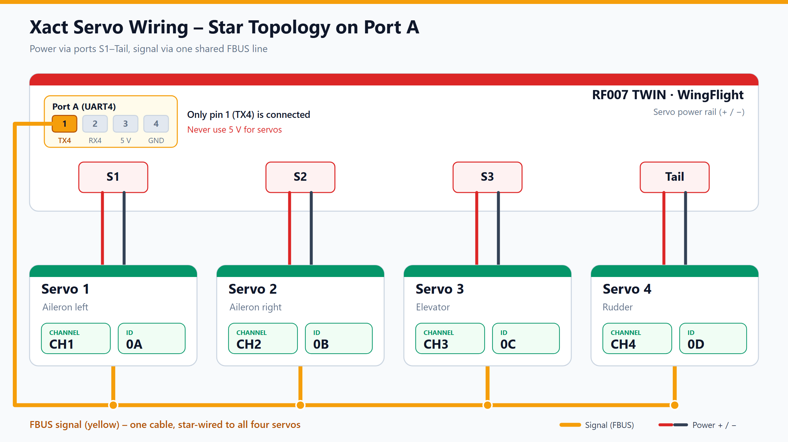
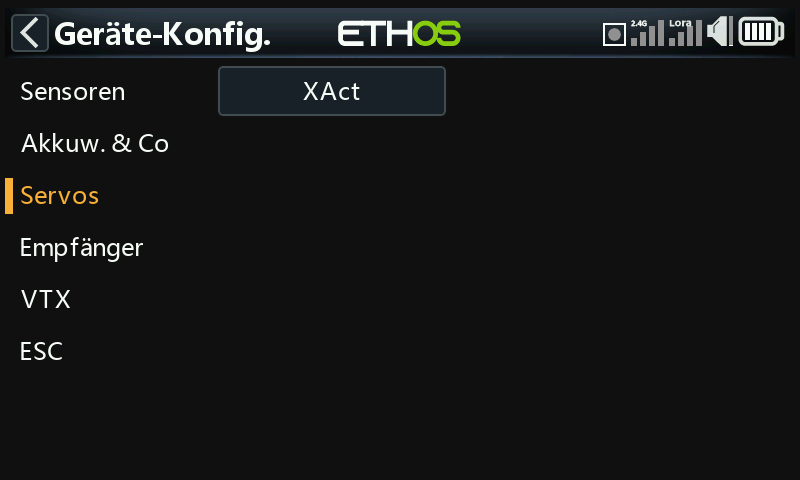
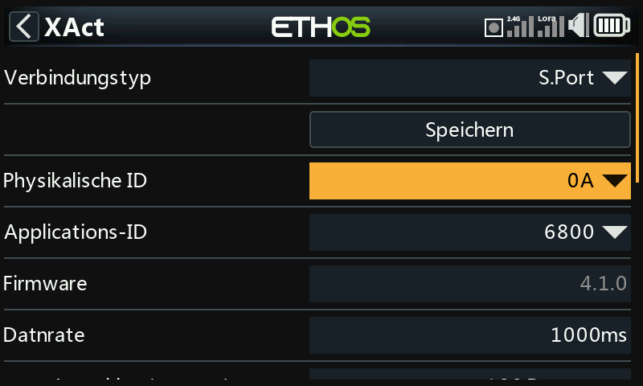
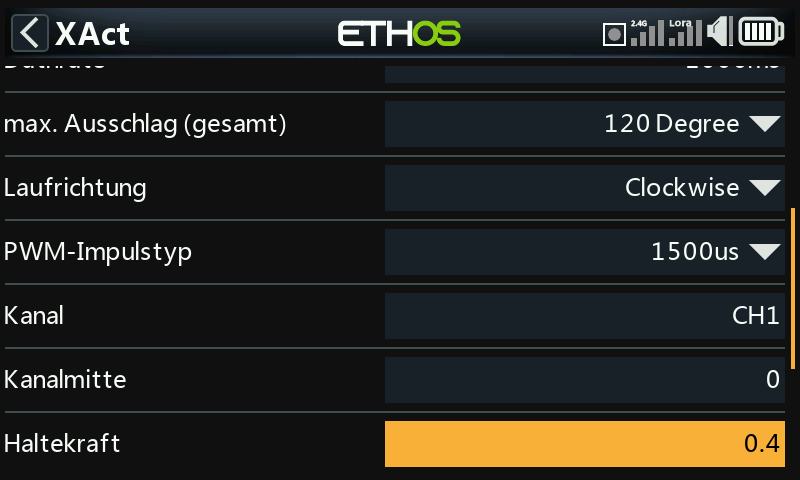
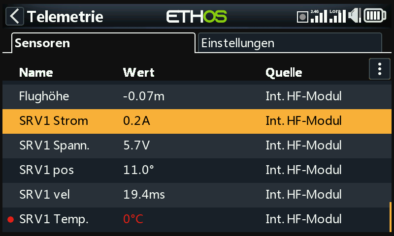

FrSky Servos¶
FrSky XACT servos can run on a single F.Bus wire. That one wire carries the control data from the flight controller to the servos and their telemetry back. Power comes from the servo ports as usual.
This guide covers the bus wiring, programming each servo, forwarding its telemetry to the radio, and the checks before the first flight. The settings themselves are explained on their own pages, linked below.
Propeller off
Remove the propeller, or keep the motor disconnected, until every servo has passed the checks in section 6.
Program one servo at a time
FrSky servos ship with the same Physical ID (0A, sometimes 0C) and
channel CH1. Two servos with the same ID on the bus answer each other's
telemetry requests, and a save can overwrite all of them at once. Connect
each new servo alone, assign its ID and channel, save it, and only then
join it to the bus.
What you need¶
- A flight controller with a free UART that can be set to FBUS Master
(function
FBUS_OUT, see Configuration). The pin mapping in this guide is taken from the VANTAC RF007 TWIN drawing; a WingFlight target for that board is not in the repository, so check your board's pinout before wiring. - Four XACT servos for two ailerons, the elevator and the rudder. They match the default mixer, see section 5.
- A transmitter with the FrSky Ethos XAct menu, to program each servo while it is connected directly to the transmitter or receiver (section 2.2).
- The Configurator for the settings in section 3.
1. Wiring¶
Each servo uses two connections:
- Power comes from the servo port on the flight controller, through the usual red (+) and black (−) lead. Servo 1 (left aileron) goes to S1, servo 2 (right aileron) to S2, servo 3 (elevator) to S3, and servo 4 (rudder) to Tail (the S4 output). The ports share one power rail on the RF007 TWIN.
- Signal is the F.Bus wire. Only pin 1 (TX4) of Port A is connected on the RF007 TWIN. The yellow signal wires of all servos join at one star point, which is fed from that pin.

Power servos only from the servo ports
On the RF007 TWIN, leave Port A pins 2 to 4 unconnected. Do not run a servo from any Port A pin, including the 5 V pin shown in the wiring diagram.
Use the same plugs and servo leads you would for PWM. The signal pin of the servo ports is not used, because the servos take their control data from the F.Bus wire.
2. Programming the servos¶
Each servo needs two addresses, set one servo at a time:
| Servo | Control surface | Channel | Physical ID (hex) | Physical ID (CLI, decimal) |
|---|---|---|---|---|
| 1 | Aileron left | CH1 |
0A |
10 |
| 2 | Aileron right | CH2 |
0B |
11 |
| 3 | Elevator | CH3 |
0C |
12 |
| 4 | Rudder | CH4 |
0D |
13 |
- Channel says which bus channel the servo answers to. Bus channel N
mirrors PWM output N by default (see Clone PWM outputs to bus servos),
so channel
CHndrives the surface on outputSn. - Physical ID is the unique bus address used for telemetry. The valid
range is
00to1A.
Check the total travel and the arm angles before installation
A Rotorflight test on a helicopter found that with 120° total travel the
angles did not match the servo positions, and that 180° matched. The
WingFlight firmware accepts 120°, 90° and 180° for XACT servos
(src/main/drivers/fbus_xact.h:36). This result is not verified for control
surfaces. Set the total travel to what your linkage needs, and measure each
arm angle before the servo is installed in the model. Endpoints are
described in Servos.
2.1 Configurator¶
The WingFlight Configurator documentation does not describe a bus-servo programming tab for XACT servos. This route is not verified for WingFlight. Use the Ethos route in section 2.2.
2.2 Transmitter (Ethos)¶
FrSky's XAct Lua script adds a servo menu to Ethos radios under System → Device Config. Install it with the FrSky Suite (2.0 or later), under Lua library. It programs a servo that is connected directly to the transmitter or receiver. Program each servo this way, one at a time, while it is connected directly to the transmitter or receiver, and only then join it to the bus. Whether the menu can also reach a servo on the flight controller's Port A is not verified for this guide, so do not rely on it for bus servos.
The entry is under System → Device config → Servos → XAct.

Ethos Device config → Servos → XAct (German UI).The table gives the values used on the test servos as a starting point:
| Setting | Value |
|---|---|
| Physical ID | 0A to 0D, one per servo |
| Application ID | 6800 (leave unchanged) |
| Data rate | 1000 ms |
| Max. travel, total | see the warning in section 2 |
| Direction | Clockwise |
| Working range | Angle mode (not continuous rotation) |
| Channel | CH1 to CH4 |
| Channel center | 0 |
| Holding force | 0.4 |
| Smoothing | 1 |
| Dead zone | 3 |

Ethos XAct menu, read from the servo (German UI).
Ethos XAct parameters, read from the servo (German UI). The photo shows the previous 120° setting; use the value from the warning in section 2.3. Serial port and telemetry in the Configurator¶
- Open the Configuration tab.
- Assign the UART that carries the servos to FBUS Master.
- Save the configuration.
The bus servos are read by the master and listed on the FBUS/S.Port Sensors tab. Each servo should appear there with its physical ID once it answers on the bus.
4. Forwarding servo telemetry to the radio¶
The flight controller forwards a sensor's telemetry to the radio only when it is
set to Forwarded. Up to 8 sensors can be forwarded at once. Out of the
box, none are forwarded (src/main/pg/fbus_master.c:40).
- Set the receiver protocol to F.Port, F.Port2 or FBUS on the Receiver tab. The Forwarded toggle is only enabled for these protocols, because the forwarding uses the receiver's telemetry return channel.
- On the FBUS/S.Port Sensors
tab, turn Forwarded on for the four servos (
0Ato0D). The change takes effect at once, without a reboot.
The same list can be set in the CLI with the key fbus_master_forwarded_sensors
(src/main/cli/settings.c:1447). Decimal IDs 10, 11, 12, 13 are the servos
0A to 0D:
set fbus_master_forwarded_sensors = 10, 11, 12, 13, 255, 255, 255, 255
save
255 means an unused slot. Check the result with the fbus_sensors command
(src/main/cli/cli.c:6769) and its Forwarded column:
fbus_sensors
On the transmitter, run Model → Telemetry → Discover sensors. The radio then lists the sensors of the servo:

Ethos telemetry page after discovery, with live values from the servo (German UI).
The flight controller decodes three values from the servo frame: current,
voltage and temperature (fbusServoConvertData in
src/main/drivers/fbus_sensor.c:187-192, called at fbus_sensor.c:533-535).
5. Bus servos and the mixer¶
The default mixer of a new model is a glider layout (src/main/pg/mixer.c:55-79):
- S1 left aileron (
STABILIZED_ROLL, weight +1000) - S2 right aileron (
STABILIZED_ROLL, weight −1000, for differential) - S3 elevator (
STABILIZED_PITCH, weight +1000) - S4 rudder (
STABILIZED_YAW, weight +1000)
With Clone PWM outputs to bus servos on, which is the default
(src/main/pg/bus_servo.c:37), bus channels 1 to 4 mirror S1 to S4. The XACT
servos on the bus therefore receive their surface positions without any extra
rule. The Servos tab shows the bus
table below the PWM table.
- Use the Mixer tab, or the Mixer Setup Wizard, for a different wing layout.
- If a surface moves the wrong way, use Reverse on the Servos tab, or check the rule polarity on the Mixer tab.
6. Checks before the first flight¶
Before the first flight, check the arm angles as the warning in section 2 describes. Then run these with the motor disarmed and the propeller off:
- Surface direction. Move each stick and check that each surface moves in the direction its mixer rule defines. Correct a reversed surface with Reverse on the Servos tab, not by changing the rule (see section 5).
- Stabilization response. Tilt the model by hand around each axis. The surfaces must respond as the mixer defines. If a surface responds in the wrong direction, check the rule polarity and Reverse.
- Full travel. Move each control to full deflection and watch the servo current in telemetry. A large rise at one point means the linkage binds. Reduce the travel with Min/Max on the Servos tab.
- Power-on. Power on with all servos connected. They must move to neutral smoothly and must not jerk.
Troubleshooting¶
| Problem | Try |
|---|---|
| Servos do not respond | Check that the UART is set to FBUS Master, the single signal wire, and that each servo is powered from its servo port. |
| Two servos appear as one | Two servos share an ID. Re-program them one at a time. |
| Servo is listed on FBUS/S.Port Sensors, but Forwarded is off | Turn Forwarded on. The receiver must be F.Port, F.Port2 or FBUS. |
| Telemetry shows nothing on the radio | Run Discover sensors on the transmitter again. |
Not verified for WingFlight¶
- The Port A pin mapping and the pin 5 V warning. They come from the RF007 TWIN drawing, and no WingFlight target for that board is in the repository.
- The Configurator route for XACT servos (section 2.1).
- The cause of the 120° versus 180° finding. It comes from a helicopter test with Rotorflight and has not been checked against WingFlight's servo angle mapping.
- Whether the Ethos XAct menu reaches a servo on the flight controller's Port A (section 2.2).